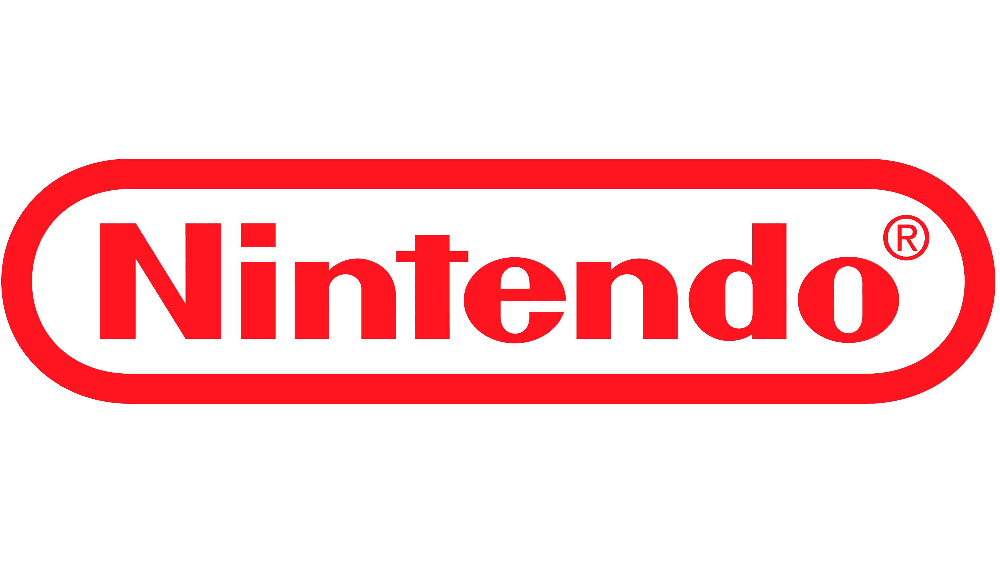

Nintendo

Sobre a empresa
Nintendo é uma empresa japonesa fundada em 1889, originalmente conhecida pela fabricação de cartas de baralho. Com o passar do tempo, a empresa passou a investir no entretenimento eletrônico e se tornou uma das principais marcas da indústria dos videogames.
A Nintendo ficou conhecida por criar experiências de jogo diferentes, personagens marcantes e consoles que apresentam formas variadas de jogar. Entre suas franquias mais famosas estão Mario, The Legend of Zelda, Pokémon e Donkey Kong.
Nintendo Switch 2

O Nintendo Switch 2 foi lançado em 2025 e é o sucessor do Nintendo Switch original. Ele mantém a proposta de um console híbrido, permitindo jogar tanto no modo portátil quanto conectado à televisão.
O aparelho utiliza controles Joy-Con destacáveis e apresenta melhorias de desempenho, tela maior e recursos adicionais em comparação com seu antecessor. Sua proposta é oferecer liberdade para jogar em diferentes ambientes.
Jogos conhecidos
A Nintendo possui franquias muito populares, como Super Mario, The Legend of Zelda, Pokémon e Mario Kart. Seus jogos são conhecidos por personagens carismáticos e experiências voltadas para diferentes públicos.